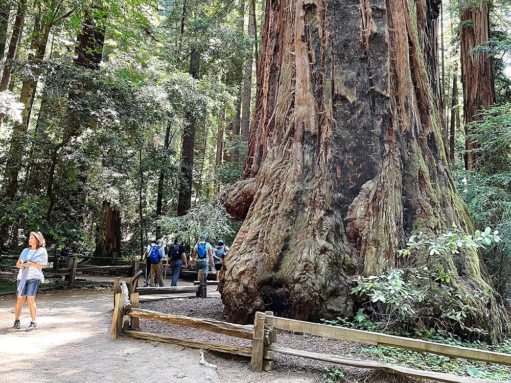
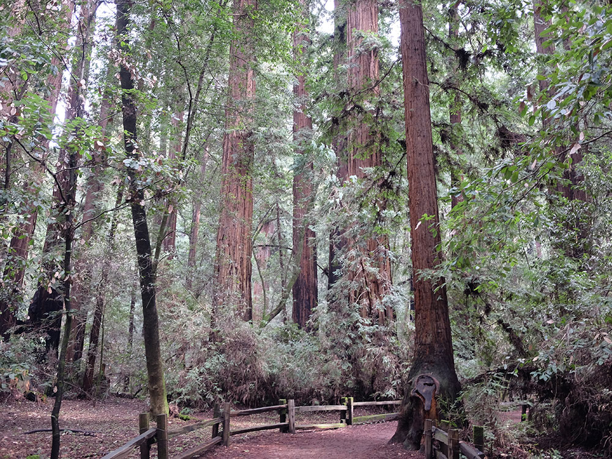
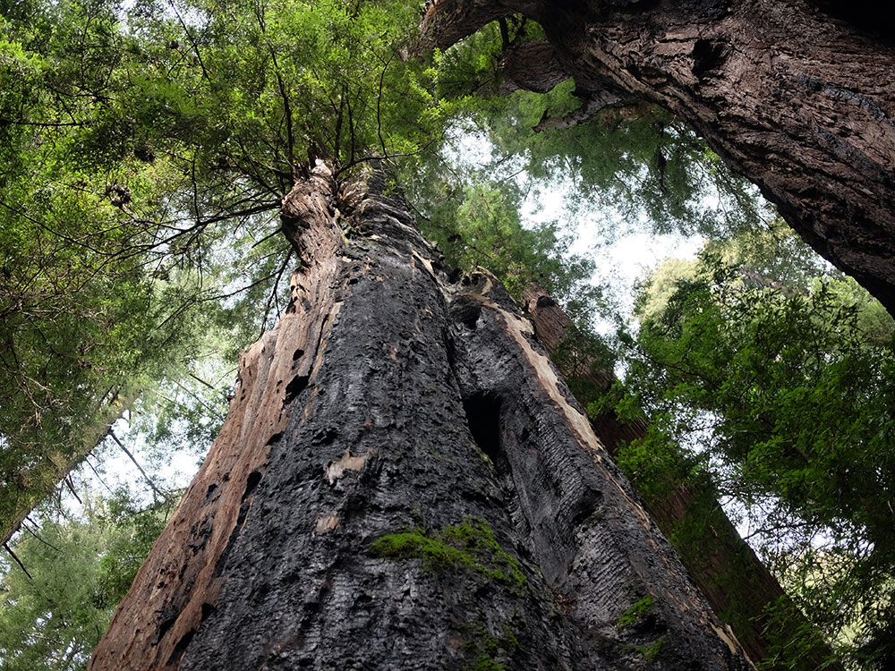
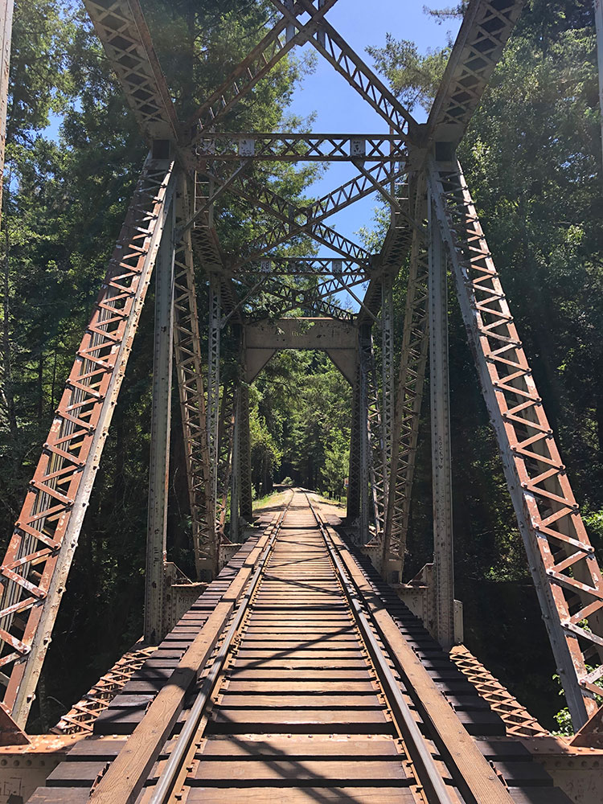

State park, preserving mainly forest and riparian areas in the watershed of the San Lorenzo River, including a grove of old-growth coast redwood
General Information
Visitor Center: 10am to 4pm daily
Nature Store: 11am to 5pm daily
Walk-in and bike access: Free
Senior discount: $1 off for ages 62+
How to Get There
From Santa Cruz, CA (6 mi): Take CA-9 N toward Felton, turn right onto Big Trees Park Road and follow signs to the main entrance of Henry Cowell Redwoods State Park.
Overview
Henry Cowell Redwoods State Park near Felton and Santa Cruz protects 4,623 acres of forest along the San Lorenzo River, including a 40-acre grove of old-growth coast redwoods reached by an easy loop nature trail. The park was created in the 1950s from land donated by the Cowell family, who had owned the property since 1865, together with land the county transferred to the state. The park is best known for the Redwood Grove, where some trees are estimated to be 1,400 to 1,800 years old, and for the adjacent Roaring Camp Railroads’ steam train. Visitors also come to hike, camp, fish in season and swim at the river’s Garden of Eden swimming hole, and the separate Fall Creek Unit has remnants of the area’s old lime kilns.
Access
The main park is in the Santa Cruz Mountains about 6 miles north of Santa Cruz, off Highway 9 near Felton. From Highway 17, take the Mt. Hermon Road exit toward Graham Hill Road; the day-use entrance is on Highway 9 about 2 miles down on the left, and the campground entrance is on Graham Hill Road. The Fall Creek Unit has its own parking area and trailheads on Felton Empire Road, off Highway 9. Parking fills early on summer weekends, and walk-in and bike-in visitors enter free.
Seasons
The park is open year-round, and its redwood forest offers shade and cool temperatures even on hot summer days. Summer is the busiest season, when the San Lorenzo River swimming hole and the campground draw crowds. Fall and spring are good for hiking, with mild weather, while winter brings rain, mist and quieter trails, though muddy conditions can limit some routes. Fishing is allowed only in season, and visitors should check State Parks for current trail and campground notices.
Things to Do
Walk Among Ancient Coast Redwoods
Henry Cowell Redwoods State Park is one of California's most beloved redwood parks, located in the Santa Cruz Mountains near Santa Cruz. The park protects approximately 4,700 acres of towering coast redwoods, mixed forests, river corridors, and scenic mountain landscapes. Visitors can experience some of the oldest and tallest trees in the region while enjoying a variety of outdoor recreation opportunities.
Explore the Famous Redwood Grove
The park's old-growth redwood grove is the centerpiece attraction and contains majestic trees that are more than 1,500 years old and rise over 250 feet into the sky. A self-guided nature trail allows visitors to walk among these ancient giants while learning about redwood ecology, history, and conservation.
Visit the Roaring Camp Railroads
Adjacent to the park, Roaring Camp Railroads offers historic steam train rides through redwood forests and into the Santa Cruz Mountains. Visitors can experience California's logging history while enjoying scenic rail excursions through spectacular natural landscapes.
Explore the San Lorenzo River and Forest Ecosystems
The park protects diverse habitats including redwood forests, oak woodlands, riparian corridors, and chaparral-covered hillsides. Visitors can enjoy birdwatching, wildlife viewing, photography, and opportunities to experience several distinct ecosystems within a single park.
Enjoy Camping, Picnicking, and Nature Observation
Henry Cowell Redwoods State Park offers campgrounds, picnic areas, and numerous recreational facilities. The peaceful forest environment makes the park an excellent destination for family outings, nature study, and relaxation.
Discover Scenic Views of the Santa Cruz Mountains
Beyond the redwood groves, the park contains trails that climb into higher elevations of the Santa Cruz Mountains. These routes provide panoramic views of forested ridges, surrounding valleys, and, on clear days, distant coastal areas.
Top Trails
Redwood Grove Loop Trail
Length: Approximately 0.8 miles loop
Elevation Gain: Minimal
Difficulty: Easy
This iconic self-guided nature trail travels through the park's old-growth redwood forest and introduces visitors to some of the largest and oldest trees in the Santa Cruz Mountains. It is suitable for all ages and is one of the most popular redwood walks in California.
Eagle Creek Trail
Length: Approximately 3 miles round trip
Elevation Gain: Moderate
Difficulty: Moderate
This scenic trail follows Eagle Creek through lush forest habitats and offers opportunities to observe redwoods, ferns, wildlife, and seasonal streams while enjoying a quieter section of the park.
Pipeline Road Trail
Length: Approximately 5 miles round trip
Elevation Gain: Moderate
Difficulty: Easy to Moderate
One of the park's primary multi-use routes, Pipeline Road provides access to redwood forests, mountain views, and connecting trail systems. It is popular with hikers, equestrians, and cyclists in designated areas.
Rincon Fire Road to Observation Deck
Length: Approximately 5.5 miles round trip
Elevation Gain: Significant
Difficulty: Moderate to Difficult
This challenging route climbs through diverse forest habitats to scenic viewpoints overlooking the Santa Cruz Mountains. Visitors are rewarded with expansive views and opportunities to experience remote sections of the park.
Visitor Centers
The park’s visitor center is open daily from 10am to 4pm and has exhibits on redwood ecology and local history, along with maps and information. The Mountain Parks Foundation Nature Store is open daily from 11am to 5pm. Both are near the start of the Redwood Grove Loop Trail, so it is easy to stop in before or after your walk. The visitor center phone number is 831-335-7077.
Camping and Lodging
The park’s campground has 107 sites in a pine and oak forest, separate from the day-use area, and reservations are highly recommended from Memorial Day to Labor Day through ReserveCalifornia. Hotels, inns and vacation rentals are in nearby Felton, Scotts Valley and Santa Cruz, and a wider range of lodging is available in Capitola and Los Gatos within about 30 to 45 minutes. Other state park campgrounds in the Santa Cruz Mountains and along the coast offer additional options.
Sources: California State Parks official Henry Cowell Redwoods State Park information, including details on old-growth redwoods, hiking trails, camping facilities, recreational opportunities, wildlife habitats, and visitor amenities.
https://www.parks.ca.gov/?page_id=546https://www.parks.ca.gov/?page_id=546
Additional information verified through California State Parks and Santa Cruz County visitor resources covering the Redwood Grove Loop Trail, Eagle Creek Trail, Roaring Camp Railroads, forest ecosystems, scenic viewpoints, and outdoor recreation opportunities within Henry Cowell Redwoods State Park.
https://www.santacruz.orghttps://www.santacruz.org
This article uses material from the Wikipedia article "Henry Cowell Redwoods State Park", which is released under the Creative Commons Attribution-Share-Alike License 3.0. Additional information from California State Parks.






